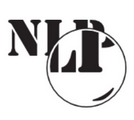

<div class="contentCard">
  <mat-card>
    <h1>O nás</h1>
    <mat-card-content>
    <p>Tento kurz vytvořila v rámci své magisterské diplomové práce studentka počítačové lingvistiky Michala Vacíková ve spolupráci s Richardem Holajem. 
    </p>

   <p>Počítačová lingvistika je bakalářský a navazující magisterský studijní program, který je vyučován na Filozofické fakultě Masarykovy univerzity. Na výuce se ovšem podílí také Fakulta informatiky, zejména <a href="https://nlp.fi.muni.cz/">Centrum zpracování přirozeného jazyka</a>. Tento program nabízí vhled do oblasti lingvistiky, ale také informatiky a kromě toho přináší specializované a prakticky orientované předměty. 
     Podrobnější informace o studiu a spoustu dalších zajímavostí je možné najít na <a href="https://www.muni.cz/bakalarske-a-magisterske-obory/24475-pocitacova-lingvistika">stránkách univerzity</a>, 
     <a href="https://cestina.phil.muni.cz/pocitacova-lingvistika">Ústavu českého jazyka</a>
     nebo na stránce <a href="http://www.pocitacova-lingvistika.cz/">pocitacova-lingvistika.cz</a>. K dispizici je vám také náš <a href="https://www.facebook.com/search/top?q=%C4%8Desk%C3%BD%20jazyk%20se%20specializac%C3%AD%20po%C4%8D%C3%ADta%C4%8Dov%C3%A1%20lingvistika">Facebook</a>. A pokud vás zaujalo programování, můžete vyzkoušet náš mikrokurz Programování jako cizí jazyk na stránkách <a href="https://openedx.phil.muni.cz/courses">Humanitní vědy dokořán</a>, kde si můžete vyzkoušet i řadu dalších krátkých kurzů vedených vyučujícími z Filozofické fakulty Masarykovy univerzity.
    </p>
    
  </mat-card-content>
  </mat-card>
</div>
    